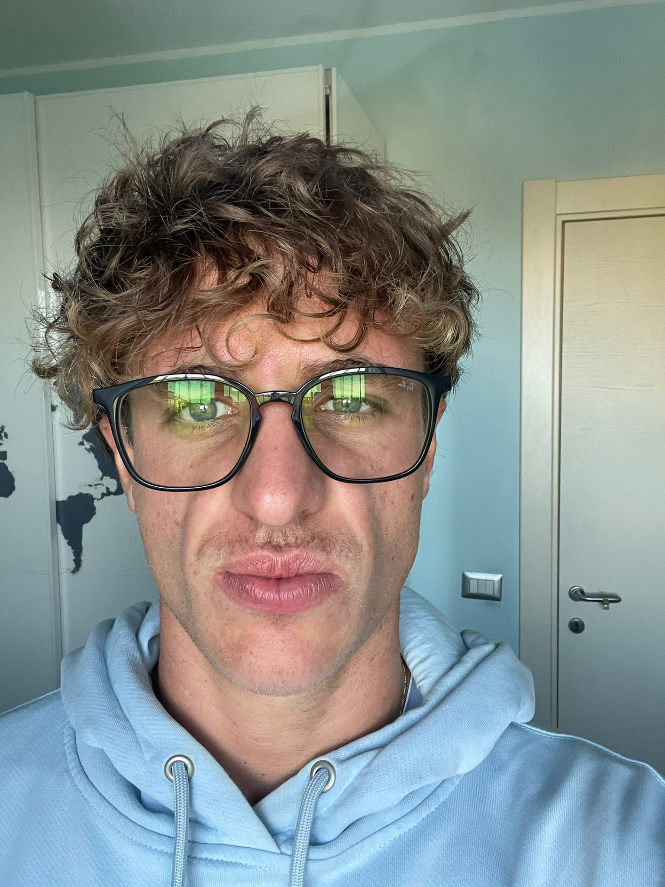
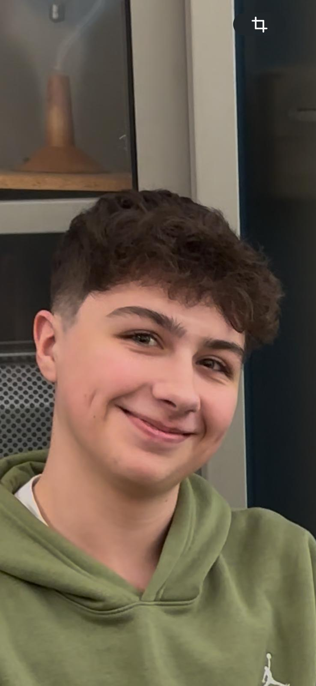
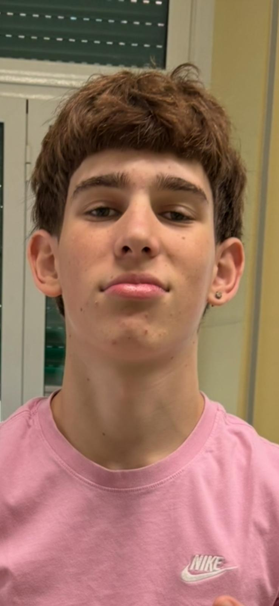
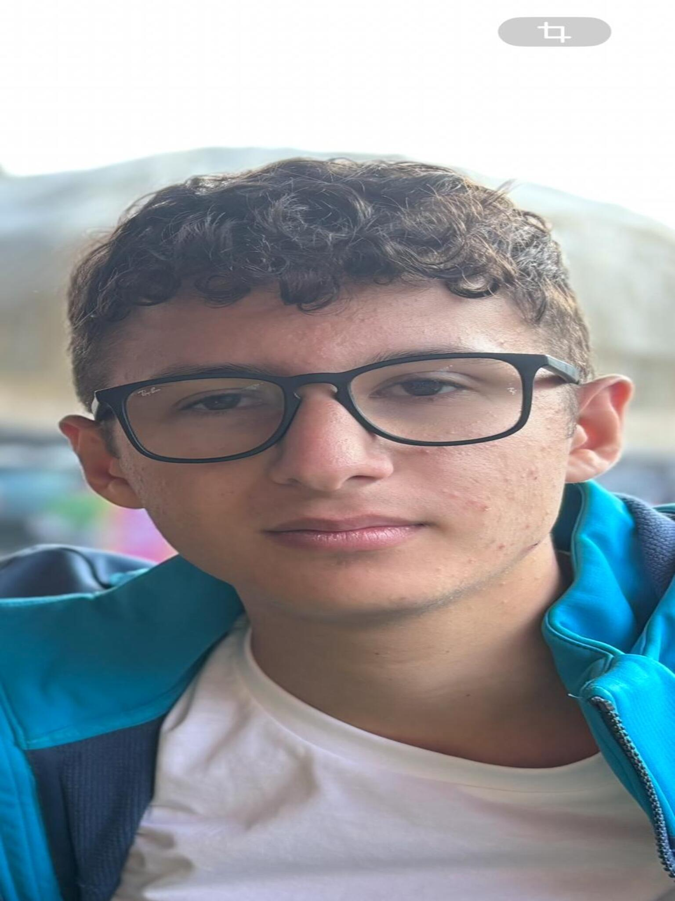

Storia di Assange
Julian Assange è il fondatore di WikiLeaks, una piattaforma creata per rendere pubblici documenti riservati provenienti da governi
e organizzazioni, con l’obiettivo dichiarato di promuovere la trasparenza. Nei video proposti vengono ripercorsi i momenti più
importanti del suo percorso: dalla pubblicazione di documenti segreti USA, alle accuse di spionaggio, fino alla lunga detenzione
e alle battaglie legali affrontate nel Regno Unito. Assange diventa una figura simbolo: per alcuni un eroe della libertà
d’informazione, per altri un criminale che ha messo in pericolo la sicurezza nazionale. La sua storia solleva interrogativi
profondi sul rapporto tra potere, informazione e diritti civili.

Video 1 – Riassunto della vicenda

Video 2 – Approfondimento
Opinioni dei Partecipanti

Samuele
A mio parere Assange rappresenta un punto di svolta nella storia dell’informazione. Il suo lavoro ha mostrato come il potere
possa essere controllato solo se esiste la possibilità di rivelare ciò che viene nascosto. Tuttavia, ritengo che alcune scelte
fatte da WikiLeaks siano state eccessive, soprattutto quando la pubblicazione dei documenti poteva mettere in pericolo persone
innocenti. La sua figura rimane complessa, ma nel complesso credo abbia contribuito ad aprire un dibattito necessario sulla
libertà di stampa.

Denis
Denis vede il caso Assange come un esempio evidente di quanto la giustizia internazionale possa essere influenzata da interessi
politici. È convinto che Assange sia stato perseguitato più per ciò che ha rivelato che per presunte violazioni della legge.
Secondo lui, le democrazie dovrebbero tutelare chi denuncia abusi, non punirlo. Allo stesso tempo riconosce che la gestione
dei dati sensibili richiede responsabilità, ma considera le accuse sproporzionate.

Elia
Per Elia, Assange non è né un eroe né un criminale, ma un individuo che ha fatto scelte estremamente coraggiose e rischiose.
Crede che la pubblicazione dei documenti abbia avuto un valore sociale enorme, ma sottolinea che ogni azione dovrebbe sempre
considerare le conseguenze. Pur non condividendo totalmente il suo metodo, considera il trattamento riservato ad Assange
profondamente ingiusto.

Davide
Davide pensa che Assange abbia semplicemente reso pubblica la verità. Per lui, i cittadini hanno il diritto di sapere cosa fanno
i propri governi, soprattutto quando si parla di guerre, spionaggio e diplomazia internazionale. Nonostante questo, considera
inevitabile che figure come Assange vengano viste come una minaccia dai poteri forti. Ritiene che la sua vicenda sia una lezione
sul valore della trasparenza e sulla fragilità della libertà di informazione.